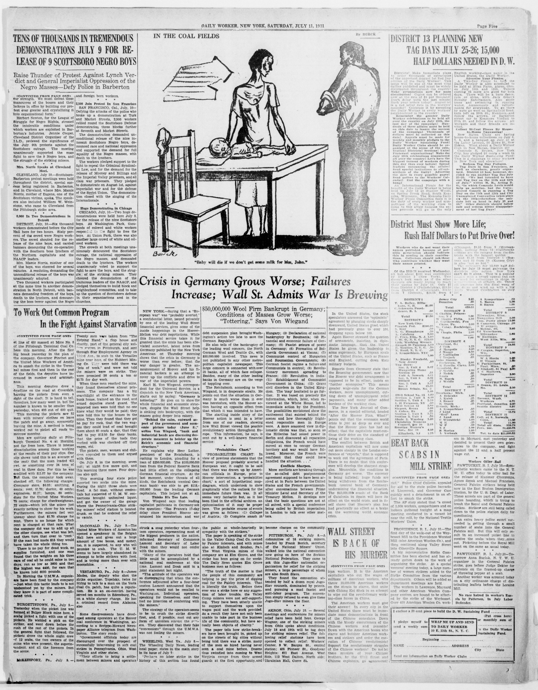
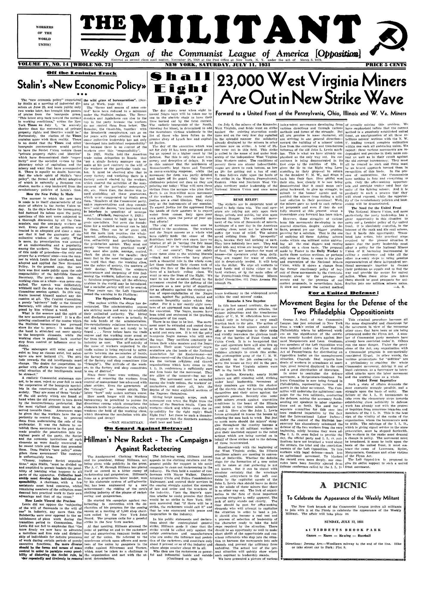
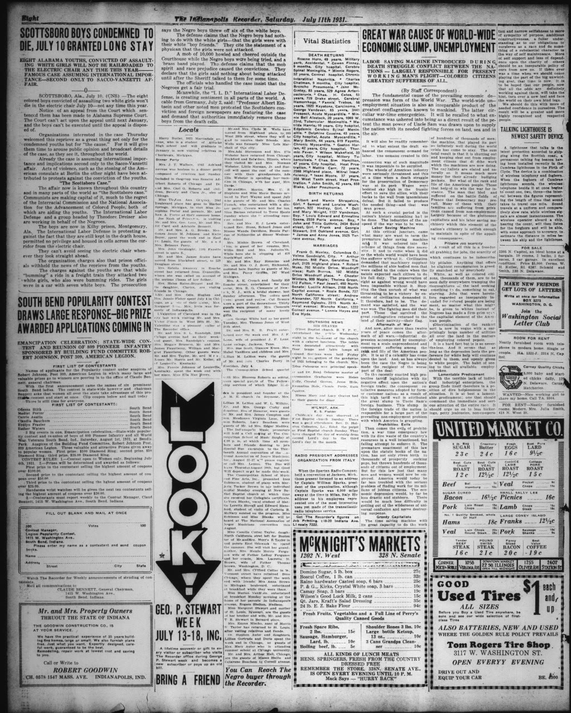

HN-472 · July 11, 1931 · Civil Rights & Social Change > Racial, Ethnic & Religious Justice > Discriminatory prosecutions and criminal justice
Source: Indianapolis Recorder, p. 8 — original page; Smithsonian National Museum of African American History and Culture account.
Report: The Recorder announced that the eight boys scheduled to die July 10 had received a longer reprieve because their cases were proceeding through appeal. The paper underscored growing international attention to the trials.
Assessment: A stay of execution is not an acquittal or release. This report supplies a critical procedural step after the death sentences in
Identity-review candidate peers: HN-470:Algorithmic
Authentic images retrieved from Marxists Internet Archive (Daily Worker, Library of Congress scan), The Militant archive and Hoosier State Chronicles (Indiana State Library). Article crops are located using the archive's own OCR word coordinates and rendered at native crop resolution; article clips are assembled from the archive's own article-block images; page images marked "archive tiles" are stitched from the archive's own tiled page service at its 256-px tile cap; page images marked "issue PDF" are single pages rasterised from the archive's own issue PDF, with the page chosen by matching the headline against the PDF's text layer; page scans are reduced-size access renditions. No images were generated, mocked, or retouched.



Status: Archive images acquired
Authentic archive-owned image renditions were retrieved for this record and are displayed above. The source-acquisition manifest preserves the original pre-acquisition feasibility assessment.
URL (preserved verbatim): https://newspapers.library.in.gov/?a=d&d=INR19310711-01.1.8
Saved research report: Historical_Newspaper_Event_Research_453-477_2026-10-23.md
Evidence note: A newspaper report means a historical publication made a claim; it does not establish that claim as fact. Contemporary reporting is separated from later scholarly context and our own assessment.